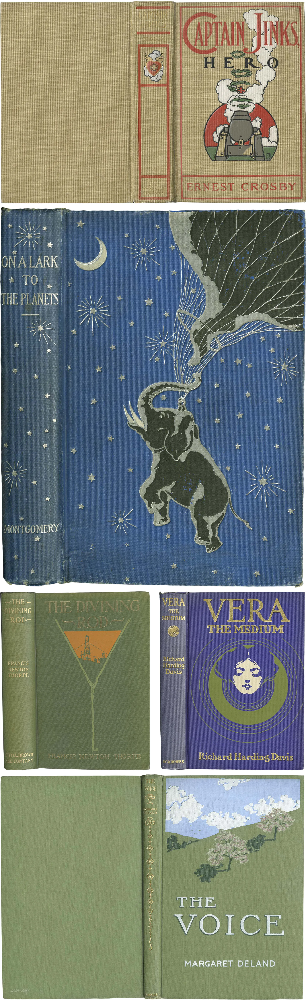

INTRO
From the beginnings of colour around 1860 to the paper jacket less than a century later, under the influence of Japan, France or Russia, the covers of books did not cease to evolve with technical progress and crises. They alternately assume a purely aesthetic function before becoming a support reserved for the greatest artists.
The Belle Epoque
of Illustrators
As early as the middle of the 19th century, illustrations were put forward in the press thanks to the wood engraving technique brought back from Japan or lithography. Photogravure is also used to reproduce drawings identically without having to engrave them by hand, or the halftone printing process. Above all, the invention of chromolitography made it possible to print in several colours since 1860.
These technical developments allowed the appearance of the famous "paperbacks", "yellowbacks" or other "penny dreadfuls" (in Great Britain), printed without frills and at a lower cost. The industrial revolution allowed access to trains and education, creating a new type of readership less fortunate and eager for adventure. Printed entirely in paper, without a hard cover, and in a smaller format, the yellowbacks can be found in every station.
Despite their mediocre quality of substance and form, they mark the evolution of the book and its cover: they are the ancestors of our paperback book, and the low-cost of period books.

Late 1800s: The color cover
Alongside this craze for accessible books, artists are having a field day illustrating the covers of beautiful books.
In a few decades (between 1860 and 1880), one passes from a graphic design in golden and symmetrical monochrome to a true golden age of colour illustration, creative and innovative. We are late 1800, the book cover is now an artistic medium and vector of its content, with the dual function of making it stand out. As you were told in article 1, it is fashionable and quite popular to offer a book as a gift.
1900s: The advent of the "modern book"
In parallel to the beginning of the 20th century, books continued their graphic evolution, playing with typos and modern compositions. One could almost imagine the last three (1905, 1908, 1912) printed on paper they already look surprisingly similar to what will be done in the 1930s !

1920s-1930s:Goodbye fabric, hello paper!
The 1920s and 1930s marked the end of the era of illustrated bindings. After the war - for economic reasons and with the evolution of fashions - the direct printing of fabric became too expensive to decorate books. The illustrations migrate from the fabric binding to the paper jacket.
In addition, the halftone technique is evolving and now allows printing in 4 colours; multi-coloured jackets are then machinally printed. These last ones, formerly used as simple protections (from 1830, you remember?), take little by little the upper hand on the rigid covers. As they are more beautiful than hard covers, we start to keep them and not to throw them away. The roles are reversing.
This is one of the major revolutions in the graphic evolution of book covers.